+ σn. If σ = (0,…,0)
we set uσi = ui.
+ σn. If σ = (0,…,0)
we set uσi = ui.
| Up | Next | Prev | PrevTail | Tail |
We describe CDE, a REDUCE package devoted to differential-geometric computations on Differential Equations (DEs, for short).
We will give concrete recipes for computations in the geometry of differential equations: higher symmetries, conservation laws, Hamiltonian operators and their Schouten bracket, recursion operators. All programs discussed here are shipped together with the CDE sources, inside the REDUCE sources. The mathematical theory on which computations are based can be found in refs. [BCD+99, KKV04]. We invite the interested reader to have a look at the website [gde] which contains useful resources in the above mathematical area. There is also a book on integrable systems and CDE [KVV18] with more examples and more detailed explanations about the mathematical part.
CDE is a REDUCE package for differential-geometric computations for DEs. The package aims at defining differential operators in total derivatives and computing with them. Such operators are called 𝒞-differential operators (see [BCD+99]).
CDE depends on the REDUCE package CDIFF for constructing total derivatives. CDIFF was developed by Gragert and Kersten for symmetry computations in DEs, and later extended by Roelofs and Post.
There are many software packages that can compute symmetries and conservation laws; many of them run on Mathematica or Maple. Those who run on REDUCE were written by M. C. Nucci [Nuc92, Nuc96], F. Oliveri (RELIE, [Oli]), F. Schwartz (SPDE, 20.53), T. Wolf (APPLYSYM (20.1) and CONLAW in the official REDUCE distribution, [Wol02, Wol95, BW95, BW92]).
The development of CDE started from the idea that a computer algebra tool for the investigation of integrability-related structures of PDEs still does not exist in the public domain. We are only aware of a Mathematica package that may find recursion operators under quite restrictive hypotheses [BH10].
CDE is especially designed for computations of integrability-related structures (such as Hamiltonian, symplectic and recursion operators) for systems of differential equations with an arbitrary number of independent or dependent variables. On the other hand CDE is also capable of (generalized) symmetry and conservation laws computations. The aim of this guide is to introduce the reader to computations of integrability related structures using CDE.
The current version of CDE, 3.0, has the following features:
At the moment the papers [FPV14, FPV16, KKVV09, KVV12, PV15, SV14] have been written using CDE, and more research by CDE on integrable systems is in progress.
The readers are warmly invited to send questions, comments, etc., both on the computations and on the technical aspects of installation and configuration of REDUCE, to the author of this document.
Acknowledgements. I’d like to thank Paul H.M. Kersten, who explained to me how to use the original CDIFF package for several computations of interest in the Geometry of Differential Equations. When I started writing CDE I was substantially helped by A.C. Norman in understanding many features of Reduce which were deeply hidden in the source code and not well documented. This also led to writing a manual of Reduce’s internals for programmers [NV]. Moreover, I’d like to thank the developers of the REDUCE mailing list for their prompt replies with solutions to my problems. On the mathematical side, I would like to thank J.S. Krasil’shchik and A.M. Verbovetsky for constant support and stimulating discussions which led me to write the software. Thanks are also due to B.A. Dubrovin, M. Casati, E.V. Ferapontov, P. Lorenzoni, M. Marvan, V. Novikov, A. Savoldi, A. Sergyeyev, M.V. Pavlov for many interesting discussions.
The mathematical theory for jets of even (ie standard) variables and total derivatives can be found in [BCD+99, Olv93].
Let us consider the space ℝn × ℝm, with coordinates (xλ,ui), 1 ≤ λ ≤ n, 1 ≤ i ≤ m. We say xλ to be independent variables and ui to be dependent variables. Let us introduce the jet space Jr(n,m). This is the space with coordinates (xλ,uσi), where uσi is defined as follows. If s: ℝn → ℝm is a differentiable function, then
|
uσi ∘ s(x) = 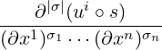 . |
Here σ = (σ1,…,σn) ∈ ℕn is a multiindex. We set |σ| = σ1 + + σn. If σ = (0,…,0)
we set uσi = ui.
CDE is first of all a program which is able to create a finite order jet space inside REDUCE. To this aim, issue the command
Then, CDE needs to know the variables and the maximal order of derivatives. The input can be organized as in the following example:
Here
Two more parameters can be set for convenience:
These are the name of the output file for recording the internal state of the program cde.red (and for debugging purposes), and the name of the file containing results of the computation.
The main routine in cde.red is called as follows:
Here the two empty lists are placeholders; they are of interest for computations with odd variables/differential equations. The function cde defines derivative symbols of the type:
Note that the symbol v_tx does not exist in the jet space. Indeed, introducing all possible permutations of independent variables in indices would increase the complexity and slow down every computation.
Two lists generated by CDE can be useful: all_der_id and all_odd_id, which are, respectively, the lists of identifiers of all even and odd variables.
Other lists are generated by CDE, but they are accessible in REDUCE symbolic mode only. Please check the file global.txt to know the names of the lists.
It can be useful to inspect the output generated by the function cde and the above lists in particular. All that data can be saved by the function:
CDE has a few procedures involving the jet space, namely:
The function cde defines total derivatives truncated at the order total_order. Their coordinate expressions are of the form
|
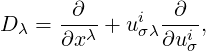 | (20.45) |
where σ is a multiindex.
The total derivative of an argument φ is invoked as follows:
the syntax closely follows REDUCE’s syntax for standard derivatives df; the above expression translates to DxDxφ, or D{2,0}φ in multiindex notation.
When in total derivatives there is a coefficient of order higher than maximal this is replaced by the identifier letop, which is a function that depends on independent variables. If such a function (or its derivatives) appears during computations it is likely that we went too close to the highest order variables that we defined in the file. All results of computations are scanned for the presence of such variables by default, and if the presence of letop is detected the computation is stopped with an error message. This usually means that we need to extend the order of the jet space, just by increasing the number total_order.
Note that in the folder containing all examples there is also a shell script, rrr.sh (works only under bash, a GNU/Linux command interpreter) which can be used to run reduce on a given CDE program. When an error message about letop is issued the script reruns the computation with a new value of total_order one unity higher than the previous one.
The function check_letop checks an expression for the presence of letop. If you wish to switch off this kind of check in order to increase the speed, the switch checkord must be set off:
The computation of total derivatives of a huge expression can be extremely time and resources consuming. In some cases it is a good idea to disable the expansion of the total derivative and leave an expression of the type Dσφ as indicated. This is achieved by the command
If you wish to restore the default behaviour, do
CDE can also compute on jets of supermanifolds. The theory can be found in [IVV04, KKV04, KV11]. The input can be organized as follows:
Here odd_var is the list of odd variables. The call
will create the jet space of the supermanifold described by the independent variables and the even and odd dependent variables, up to the order total_order. Total derivatives truncated at the order total_order will also include odd derivatives:
|
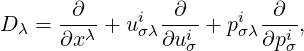 | (20.46) |
where σ is a multiindex. The considerations on expansion and letop apply in this case too.
Odd variables can appear in anticommuting products; this is represented as
where ext(p_2xt,p) = - ext(p,p_2xt) and the variables are arranged in a unique way terms of an internal ordering. Indeed, the internal representation of odd variables and their products (not intended for normal users!) is
as all odd variables and their derivatives are indexed by integers. Note that p and ext(p) are just the same. The odd product of two expressions φ and ψ is achieved by the CDIFF function
The derivative of an expression φ with respect to an odd variable p is achieved by
We now give the equation in the form of one or more derivatives equated to right-hand side expressions. The left-hand side derivatives are called principal, and the remaining derivatives are called parametric22 . Parametric coordinates are coordinates on the equation manifold and its differential consequences, and principal coordinates are determined by the differential equation and its differential consequences. For scalar evolutionary equations with two independent variables parametric derivatives are of the type (u,ux,uxx,…). Note that the system must be in passive orthonomic form; this also means that there will be no nontrivial integrability conditions between parametric derivatives. (Lines beginning with % are comments for REDUCE.) The input is formed as follows (Burger’s equation).
Systems of PDEs are input in the same way: of course, the above two lists must have the same length. See 20.10.11 for an example.
The main routine in cde.red is called as follows:
Here the three empty lists are placeholders; they are important for computations with odd variables. The function cde computes principal and parametric derivatives of even and odd variables, they are stored in the lists all_parametric_der, all_principal_der, all_parametric_odd, all_principal_odd.
The function cde also defines total derivatives truncated at the order total_order and restricted on the (even and odd) equation; this means that total derivatives are tangent to the equation manifold. Their coordinate expressions are of the form
|
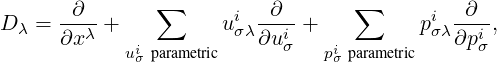 | (20.47) |
where σ is a multiindex. It can happen that uσλi (or pσλi) is principal and must be replaced with differential consequences of the equation. Such differential consequences are called primary differential consequences, and are computed; in general they will depend on other, possibly new, differential consequences, and so on. Such newly appearing differential consequences are called secondary differential consequences. If the equation is in passive orthonomic form, the system of all differential consequences (up to the maximal order total_order) must be solvable in terms of parametric derivatives only. The function cde automatically computes all necessary and sufficient differential consequences which are needed to solve the system. The solved system is available in the form of REDUCE let-rules in the variables repprincparam_der and repprincparam_odd.
The syntax and properties (expansion and letop) of total derivatives remain the same. For exmaple:
returns
It is possible to deal with mixed systems on eve and odd variables. For example, in the case of Burgers equation we can input the linearized equation as a PDE on a new odd variable as follows (of course, in addition to what has been defined before):
The main routine in cde.red is called as follows:
CDE can compute variational derivatives of any function (usually a Lagrangian density) or superfunction ℒ. We have the following coordinate expression
|
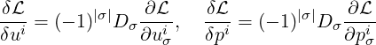 | (20.48) |
which translates into the CDE commands
The Euler operator computes variational derivatives with respect to all even and odd variables in the jet space, and arranges them in a list of two lists, the list of even variational derivatives and the list of odd variational derivatives. The command is
All the above is used in the definition of Schouten brackets, as we will see in Subsection 20.10.6.
Linearizing (or taking the Fréchet derivative) of a vector function that defines a differential equation yields a differential operator in total derivatives. This operator can be restricted to the differential equation, which may be regarded as a differential constraint; the kernel of the restricted operator is the space of all symmetries (including higher or generalized symmetries) [BCD+99, Olv93].
The formal adjoint of the linearization operator yields by restriction to the corresponding differential equation a differential operator whose kernel contains all characteristic vectors or generating functions of conservation laws [BCD+99, Olv93].
Such operators are examples of 𝒞-differential operators. The (still incomplete) REDUCE implementation of the calculus of 𝒞-differential operators is the subject of this section.
Let us consider the spaces
| P = {φ: Jr(n,m) → ℝk}, Q = {ψ: Jr(n,m) → ℝs}. |
A 𝒞-differential operator Δ: P → Q is defined to be a map of the type
|
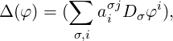 | (20.49) |
where aiσj are differentiable functions on Jr(n,m), 1 ≤ i ≤ k, 1 ≤ j ≤ s. The order of δ is the highest length of σ in the above formula.
We may consider a generalization to k-𝒞-differential operators of the type
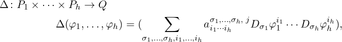 | (20.50) |
A 𝒞-differential operator in CDE must be declared as follows:
where
The syntax for one component of the operator opname is
The above operator will compute
|
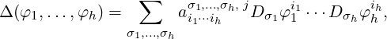 | (20.51) |
for fixed integer indices i1,…,ih and j.
There are several operations which involve differential operators. Obviously they can be summed and multiplied by scalars.
An important example of 𝒞-differential operator is that of linearization, or Fréchet derivative, of a vector function
| F : Jr(n,m) → ℝk. |
This is the operator
ℓF : ϰ → P, φ ∑
σ,i∂Fk
∂uiσ Dσφi, ∑
σ,i∂Fk
∂uiσ Dσφi,
|
where ϰ = {φ: Jr(n,m) → ℝm} is the space of generalized vector fields on jets [BCD+99, Olv93].
Linearization can be extended to an operation that, starting from a k-𝒞-differential operator, generates a k + 1-𝒞-differential operator as follows:
|
ℓΔ(p1,…,pk,φ) = (∑
σ,σ1,…,σk,i,i1,…,ik 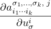 DσφiD σ1p1i1 Dσkpkik ) |
(The above operation is also denoted by ℓΔ,p1,…,pk(φ).)
At the moment, CDE is only able to compute the linearization of a vector function (Section 20.10.8).
Given a 𝒞-differential operator Δ like in (20.49) we can define its adjoint as
|
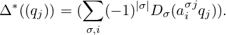 | (20.52) |
Note that the matrix of coefficients is transposed. Again, the coefficients of the adjoint operator can be found by computing Δ∗(xσej) for every basis vector ej and every count xσ, where |σ|≤ r, and r is the order of the operator. This operation can be generalized to 𝒞-differential operators with h arguments.
At the moment, CDE can compute the adjoint of an operator with one argument (Section 20.10.8).
Now, consider two operators Δ: P → Q and ∇: Q → R. Then the composition ∇∘ Δ is again a 𝒞-differential operator. In particular, if
| Δ(p) = (∑ σ,iaiσjD σpi), ∇(q) = (∑ τ,jbjτkD τqj), |
then
| ∇∘ Δ(p) = (∑ τ,jbjτkD τ(∑ σ,iaiσjD σpi)) |
This operation can be generalized to 𝒞-differential operators with h arguments.
There is another important operation between 𝒞-differential operators with h arguments: the Schouten bracket [BCD+99]. We will discuss it in next Subsection, in the context of another formalism, where it takes an easier form [KKV04].
In the papers [IVV04, KKV04] (and independently in [Get02]) a scheme for dealing with (skew-adjoint) variational multivectors was devised. The idea was that operators of the type (20.50) could be represented by homogeneous vector superfunctions on a supermanifold, where odd coordinates qσi would correspond to total derivatives Dσφi.
The isomorphism between the two languages is given by
|
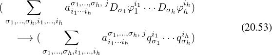 | (20.53) |
where qσi is the derivative of an odd dependent variable (and an odd variable itself).
A superfunction in CDE must be declared as follows:
where
The above parameters of the operator opname are stored in the property list23 of the identifier opname. This means that if one would like to know how many arguments has the operator opname the answer will be the output of the command
and the same for the other parameters.
The syntax for one component of the superfunction sfname is
CDE is able to deal with 𝒞-differential operators in both formalisms, and provides conversion utilities:
where in the first case a 𝒞-differential operator cdop is converted into a vector superfunction superfun with the same properties, and conversely.
We are interested in the operation of Schouten bracket between variational multivectors [IVV04]. These are differential operators with h arguments in ϰ with values in densities, and whose image is defined up to total divergencies:
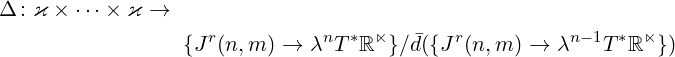 | (20.54) |
|
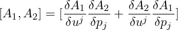 | (20.55) |
where δ∕δui, δ∕δpj are the variational derivatives and the square brackets at the right-hand side should be understood as the equivalence class up to total divergencies.
If the operators A1, A2 are compatible, ie [A1,A2] = 0, the expression (20.55) must be a total derivative. This means that:
|
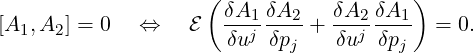 | (20.56) |
If A1 is an h-vector and A2 is a k-vector the formula (20.55) produces a (h + k − 1)-vector, or a 𝒞-differential operator with h + k − 1 arguments. If we would like to check that this multivector is indeed a total divergence, we should apply the Euler operator, and check that it is zero. This procedure is considerably simpler than the analogue formula with operators (see for example [KKV04]). All this is computed by CDE:
where biv1 and biv2 are bivectors, or 𝒞-differential operators with 2 arguments, and tv12 is the result of the computation, which is a three-vector (it is automatically declared to be a superfunction). Examples of this computation are given in Section 20.10.12.
Currently, CDE supports linearization of a vector function, or a 𝒞-differential operator with 0 arguments. The computation is performed in odd coordinates.
Suppose that we would like to linearize the vector function that defines the (dispersionless) Boussinesq equation [KKV06]:
 | (20.57) |
where σ is a constant. Then a jet space with independent variables x,t, dependent variables u,v and odd variables in the same number as dependent variables p,q must be created:
The linearization of the above system and its adjoint are, respectively
| ℓBou | = 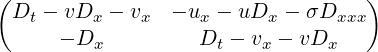 , | ||
| ℓBou∗ | = 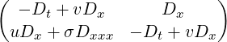 |
Let us introduces the vector function whose zeros are the Boussinesq equation:
The following command assigns to the identifier lbou the linearization 𝒞-differential operator ℓBou of the vector function f_bou
moreover, a superfunction lbou_sf is also defined as the vector superfunction corresponding to ℓBou. Indeed, the following sequence of commands:
shows the vector superfunction corresponding to ℓBou. To compute the value of the (1,1) component of the matrix ℓBou applied to an argument psi do
In order to check that the result is correct one could define the linearization as a 𝒞-differential operator and then check that the corresponding superfunctions are the same:
the result of the two last commands must be zero.
The formal adjoint of lbou can be computed and assigned to the identifier lbou_star by the command
Again, the associated vector superfunction lbou_star_sf is computed, with values
Again, the above operator can be checked for correctness.
Once the linearization and its ajdoint are computed, in order to do computations with symmetries and conservation laws such operator must be restricted to the corresponding equation. This can be achieved with the following steps:
Only the last step needs to be explained. If we are considering, eg the Boussinesq equation, then ut and its differential consequences (ie the principal derivatives) are not automatically expanded to the right-hand side of the equation and its differential consequences. At the moment this step is not fully automatic. More precisely, only principal derivatives which appear as coefficients in total derivatives can be replaced by their expression. The lists of such derivatives with the corresponding expressions are repprincparam_der and repprincparam_odd (see Section 20.10.3). They are in the format of REDUCE’s replacement list and can be used in let-rules. If the linearization or its adjoint happen to depend on another principal derivative this must be computed separately. A forthcoming release of REDUCE will automatize this procedure.
However, note that for evolutionary equations this step is trivial, as the restriction of linearization and its adjoint on the given PDE will only affect total derivatives which are restricted by CDE to the PDE.
In this section we show the computation of (some) higher [BCD+99] (or generalized, [Olv93]) symmetries of Burgers’equation B = ut − uxx + 2uux = 0.
We provide two ways to solve the equations for higher symmetries. The first possibility is to use dimensional analysis. The idea is that one can use the scale symmetries of Burgers’equation to assign “gradings” to each variable appearing in the equation (in other words, one can use dimensional analisys). As a consequence, one could try different ansatz for symmetries with polynomial generating functions. For example, it is possible to require that they are sum of monomials of given degrees. This ansatz yields a simplification of the equations for symmetries, because it is possible to solve them in a “graded” way, i.e., it is possible to split them into several equations made by the homogeneous components of the equation for symmetries with respect to gradings.
In particular, Burgers’equation translates into the following dimensional equation:
| [ut] = [uxx], [uxx] = [2uux]. |
By the rules [uz] = [u] − [z] and [uv] = [u] + [v], and choosing [x] = −1, we have [u] = 1 and [t] = −2. This will be used to generate the list of homogeneous monomials of given grading to be used in the ansatz about the structure of the generating function of the symmetries.
The file for the above computation is bur_hsy1.red and the results of the computation are in results/bur_hsy1_res.red.
Another possibility to solve the equation for higher symmetries is to use a PDE solver that is especially devoted to overdetermined systems, which is the distinguishing feature of systems coming from the symmetry analysis of PDEs. This approach is described below. The file for the above computation is bur_hsy2.red and the results of the computation are in results/bur_hsy2_res.red.
Setting up the jet space and the differential equation. After loading CDE:
Here the new lists are scale degrees:
We now give the equation and call CDE:
Solving the problem via dimensional analysis. Higher symmetries of the given equation are functions sym depending on parametric coordinates up to some jet space order. We assume that they are graded polynomials of all parametric derivatives. In practice, we generate a linear combination of graded monomials with arbitrary coefficients, then we plug it in the equation of the problem and find conditions on the coefficients that fulfill the equation. To construct a good ansatz, it is required to make several attempts with different gradings, possibly including independent variables, etc.. For this reason, ansatz-constructing functions are especially verbose. In order to use such functions they must be initialized with the following command:
Note the empty list at the end; it playe a role only for computations involving odd variables.
We need one operator equ whose components will be the equation of higher symmetries and its consequences. Moreover, we need an operator c which will play the role of a vector of constants, indexed by a counter ctel:
We prepare a list of variables ordered by scale degree:
The function der_deg_ordering is defined in cde.red. It produces the given list using the list all_parametric_der of all parametric derivatives of the given equation up to the order total_order. The first two parameters can assume the values 0 or 1 and say that we are considering even variables and that the variables are of parametric type.
Then, due to the fact that all parametric variables have positive scale degree then we prepare the list ansatz of all graded monomials of scale degree from 0 to 5
More precisely, the command graded_mon produces a list of monomials of degrees from i to j, formed from the list of graded variables l_grad_var; the second command adds the zero-degree monomial; and the last command produces a single list of all monomials.
Finally, we assume that the higher symmetry is a graded polynomial obtained from the above monomials (so, it is independent of x and t!)
Next, we define the equation ℓB(sym) = 0. Here, ℓB stands for the linearization (Section 20.10.8). A function sym that fulfills the above equation, on account of B = 0, is an higher symmetry.
We cannot define the linearization as a 𝒞-differential operator in this way:
as the linearization is performed with respect to parametric derivatives only! This means that the linearization has to be computed beforehand in a free jet space, then it may be used here.
So, the right way to go is
Note that for evolutionary equations the restriction of the linearization to the equation is equivalent to just restricting total derivatives, which is automatic in CDE.
The equation becomes
At this point we initialize the equation solver. This is a part of the CDIFF package called integrator.red (see the original documentation inside the folder packages/cdiff in REDUCE’s source code). In our case the above package will solve a large sparse linear system of algebraic equations on the coefficients of sym.
The list of variables, to be passed to the equation solver:
The number of initial equation(s):
Next command initializes the equation solver. It passes
Run the procedure splitvars_opequ on the first component of equ in order to obtain equations on coefficiens of each monomial.
Note that splitvars_opequ needs to know the indices of the first and the last equation in equ, and here we have only one equation as equ(1). The output tel is the final number of splitted equations, starting just after the initial equation equ(1).
Next command tells the solver the total number of equations obtained after running splitvars.
This command solves the equations for the coefficients. Note that we have to skip the initial equations!
The output is written in the result file by the commands
The command off nat turns off writing in natural notation; results in this form are better only for visualization, not for writing or for input into another computation. The command «resname» forces the evaluation of the variable resname to its string value. The commands out and shut are for file opening and closing. The command sym:=sym is evaluated only on the right-hand side.
One more example file is available; it concerns higher symmetries of the KdV equation. In order to deal with symmetries explicitely depending on x and t it is possible to use REDUCE and CDE commands in order to have sym = x*(something of degree 3) + t*(something of degree 5) + (something of degree 2); this yields scale symmetries. Or we could use sym = x*(something of degree 1) + t*(something of degree 3) + (something of degree 0); this yields Galilean boosts.
Solving the problem using CRACK. CRACK is a PDE solver which is devoted mostly to the solution of overdetermined PDE systems [BW95, WB]. Several mathematical problems have been solved by the help of CRACK, like finding symmetries [Wol95, BW92] and conservation laws [Wol02]. The aim of CDE is to provide a tool for computations with total derivatives, but it can be used to compute symmetries too. In this subsection we show how to interface CDE with CRACK in order to find higher (or generalized) symmetries for the Burgers’equation. To do that, after loading CDE and introducing the equation, we define the linearization of the equation lbur.
We introduce the new unknown function ‘ansatz’. We assume that the function depends on parametric variables of order not higher than 3. The variables are selected by the function selectvars of CDE as follows:
In the arguments of selectvars, 0 means that we want even variables, i stands for the order of variables, dep_var stands for the dependent variables to be selected by the command (here we use all dependent variables), all_parametric_der is the set of variables where the function will extract the variables with the required properties. In the current example we wish to get all higher symmetries depending on parametric variables of order not higher than 3.
The dependency of ansatz from the variables is given with the standard REDUCE command depend:
The equation to be solved is the equation lbur(ansatz)=0, hence we give the command
The above command will issue an error if the list {total_eq} depends on the flag variable letop. In this case the computation has to be redone within a jet space of higher order.
The equation ell_b(ansatz)=0 is polynomial with respect to the variables of order higher than those appearing in ansatz. For this reason, its coefficients can be put to zero independently. This is the reason why the PDEs that determine symmetries are overdetermined. To tell this to CRACK, we issue the command
The list split_vars contains variables which are in the current CDE jet space but not in even_vars.
Then, we load the package CRACK and get results.
The results are in the variable crack_results:
So, we have three symmetries; of course the generalized symmetry corresponds to c_8. Remember to check always the output of CRACK to see if any of the symbols c_n is indeed a free function depending on some of the variables, and not just a constant.
In this section we will find (some) local conservation laws for the KdV equation F = ut − uxxx + uux = 0. Concretely, we have to find non-trivial 1-forms f = fxdx + ftdt on F = 0 such that f = 0 on F = 0. “Triviality” of conservation laws is a delicate matter, for which we invite the reader to have a look in [BCD+99].
The files containing this example are kdv_lcl1,kdv_lcl2 and the corresponding results and debug files.
We suppose that the conservation law has the form ω = fxdx + ftdt. Using the same ansatz as in the previous example we assume
Next we define the equation (ω) = 0, where is the total exterior derivative restricted to the equation.
After solving the equation as in the above example we get
Unfortunately it is clear that the conservation law corresponding to c(3) is trivial, because it is just the KdV equation. Here this fact is evident; how to get rid of less evident trivialities by an ‘automatic’ mechanism? We considered this problem in the file kdv_lcl2, where we solved the equation
after having loaded the values fx and ft found by the previous program. In order to do that we have to introduce two new counters:
We make the following ansatz on f0:
After solving the system, issuing the commands
we obtain
This mechanism can be easily generalized to situations in which the conservation laws which are found by the program are difficult to treat by pen and paper. However, we will present another approach to the computation of conservation laws in subsection 20.10.15.
In this section we will show how to compute local Hamiltonian operators for Korteweg–de Vries, Boussinesq and Kadomtsev–Petviashvili equations. It is interesting to note that we will adopt the same computational scheme for all equations, even if the latter is not in evolutionary form and it has more than two independent variables. This comes from a new mathematical theory which started in [KKV04] for evolution equations and was later extended to general differential equations in [KKVV09].
Korteweg–de Vries equation. Here we will find local Hamiltonian operators for the KdV equation ut = uxxx + uux. A necessary condition for an operator to be Hamiltonian is that it sends generating functions (or characteristics, according with [Olv93]) of conservation laws to higher (or generalized) symmetries. As it is proved in [KKV04], this amounts at solving KdV (phi) = 0 over the equation
|
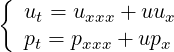 |
or, in geometric terminology, find the shadows of symmetries on the ℓ∗-covering of the KdV equation, with the further condition that the shadows must be linear in the p-variables. Note that the second equation (in odd variables!) is just the adjoint of the linearization of the KdV equation applied to an odd variable.
The file containing this example is kdv_lho1.
We stress that the linearization KdV (phi) = 0 is the equation
but the total derivatives are lifted to the ℓ∗ covering, hence they contain also derivatives with respect to p’s. We can define a linearization operator lkdv as usual.
In order to produce an ansatz which is a superfunction of one odd variable (or a linear function in odd variables) we produce two lists: the list l_grad_var of all even variables collected by their gradings and a similar list l_grad_odd for odd variables:
We need a list of graded monomials which are linear in odd variables. The function mkalllinodd produces all monomials which are linear with respect to the variables from l_grad_odd, have (monomial) coefficients from the variables in l_grad_var, and have total scale degrees from 1 to 6. Such monomials are then converted to the internal representation of odd variables.
Note that all odd variables have positive scale degrees thanks to our initial choice deg_odd_var:=1;. Finally, the ansatz for local Hamiltonian operators:
After having set
and having initialized the equation solver as before, we do splitext
in order to split the polynomial equation with respect to the ext variables, then splitvars
in order to split the resulting polynomial equation in a list of equations on the coefficients of all monomials.
Now we are ready to solve all equations:
Note that we want all equations to be solved!
The results are the two well-known Hamiltonian operators for the KdV. After integration the function sym becomes
Of course, the results correspond to the operators
px → Dx,
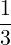
(3p3x + 2upx + uxp) → (3Dxxx + 2uDx + ux).
(3Dxxx + 2uDx + ux).Note that each operator is multiplied by one arbitrary real constant, c(5) and c(2).
The same problem can be approached using CRACK (see file kdv_lho2.red). An ansatz is constructed by the following instructions:
Note that we have
Indeed, we are looking for a third-order operator whose coefficients depend on variables of order not higher than 3. This last property has to be introduced by
Then, we introduce the linearization (lifted on the cotangent covering)
and the equation to be solved, together with the usual test that checks for the nedd to enlarge the jet space:
Finally, we split the above equation by collecting all coefficients of odd variables:
and we feed CRACK with the equations that consist in asking to the above coefficients to be zero:
The results are the same as in the previous section:
Boussinesq equation. There is no conceptual difference when computing for systems of PDEs with respect to the previous computations for scalar equations. We will look for Hamiltonian structures for the dispersionless Boussinesq equation (20.57).
We will proceed by dimensional analysis. Gradings can be taken as
| [t] = −2, [x] = −1, [v] = 1, [u] = 2, [p] = 1, [q] = 2 |
where p, q are the two odd coordinates. We have the ℓBou∗ covering equation

|
We have to find Hamiltonian operators as shadows of symmetries on the above covering. At the level of source file (bou_lho1) the input data is:
The ansatz for the components of the Hamiltonian operator, of scale degree between 1 and 6, is
and the equation for shadows of symmetries is (lbou2 is taken from Section 20.10.8)
After the usual procedures for decomposing polynomials we obtain three local Hamiltonian operators:
There is a whole hierarchy of nonlocal Hamiltonian operators [KKV04].
Kadomtsev–Petviashvili equation. There is no conceptual difference in symbolic computations of Hamiltonian operators for PDEs in 2 independent variables and in more than 2 independent variables, regardless of the fact that the equation at hand is written in evolutionary form. As a model example, we consider the KP equation
|
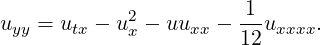 | (20.58) |
Proceeding as in the above examples we input the following data:
and look for Hamiltonian operators of scale degree between 1 and 5:
After solving the equation for shadows of symmetries in the cotangent covering
we get the only local Hamiltonian operator
As far as we know there are no further local Hamiltonian operators.
Remark: the above Hamiltonian operator is already known in an evolutionary presentation of the KP equation [Kup94]. Our mathematical theory of Hamiltonian operators for general differential equations [KKVV09] allows us to formulate and solve the problem for any presentation of the KP equation. Change of coordinate formulae could also be provided.
In this Section we will discuss examples of calculation of Schouten bracket in order to check the Hamiltonian property for 𝒞-differential operators and/or the compatibility of two distinct Hamiltonian operators. This subject is treated in a much greater detail in the recent paper [Vit19], where many examples of Schouten bracket calculations with CDE have been described.
We observe that a package that is capable to calculate the Schouten bracket of weakly nonlocal operators (in one independent variable) is currently part of CDE, version 3.0. Documentation for the package is being written; interested readers may contact the author of CDE for questions.
Let F = 0 be a system of PDEs. Here F ∈ P , where P is the module (in the algebraic sense) of vector functions P = {Jr(n,m) → ℝk}.
The Hamiltonian operators which have been computed in the previous Section are differential operators sending generating functions of conservation laws into generating functions of symmetries for the above system of PDEs:
|
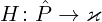 | (20.59) |
As the operators are mainly used to define a bracket operation and a Lie algebra structure on conservation laws, two properties are required: skew-adjointness H∗ = −H (corresponding with skew-symmetry of the bracket) and [H,H] = 0 (corresponding with the Jacobi property of the bracket).
In order to compute the two properties we proceed as follows. Skew-adjointness is checked by computing the adjoint and verifying that the sum with the initial operator is zero.
In the case of evolutionary equations, P = ϰ, and Hamiltonian operators (20.59) can also be interpreted as variational bivectors, ie
|
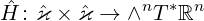 | (20.60) |
where the correspondence is given by
|
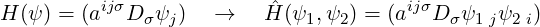 | (20.61) |
In terms of the corresponding superfunctions:
| H = aikσp kσ → Ĥ = aikσp kσpi. |
Note that the product pkσpi is anticommutative since p’s are odd variables.
After that a 𝒞-differential operator of the type of H has been converted into a bivector it is possible to apply the formulae (20.55) and (20.56) in order to compute the Schouten bracket. This is what we will see in next section.
Bi-Hamiltonian structure of the KdV equation. We can do the above computations using KdV equation as a test case (see the file kdv_lho3.red).
Let us load the above operators:
We may convert the two operators into the corresponding superfunctions
The result of the conversion is
Skew-adjointness is checked at once:
and the result of the last two commands is zero.
Then we shall convert the two superfunctions into bivectors:
The output is:
Finally, the three Schouten brackets [Ĥi,Ĥj] are computed, with i,j = 1,2:
the result are well-known lists of zeros.
Bi-Hamiltonian structure of the WDVV equation. This subsection refers to the the example file wdvv_biham1.red. The simplest nontrivial case of the WDVV equations is the third-order Monge–Ampère equation, fttt = fxxt2 − fxxxfxtt [Dub96]. This PDE can be transformed into hydrodynamic form,
|
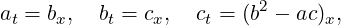 |
via the change of variables a = fxxx, b = fxxt, c = fxtt. This system possesses two Hamiltonian formulations [FGMN97]:
|
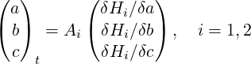 |
with the homogeneous first-order Hamiltonian operator
|
Â1 = 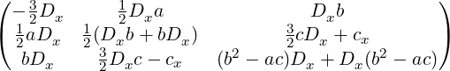 |
with the Hamiltonian H1 = ∫ cdx, and the homogeneous third-order Hamiltonian operator
|
A2 = Dx 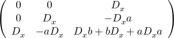 Dx, |
with the nonlocal Hamiltonian
|
H2 = −∫
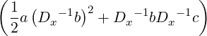 dx. |
Both operators are of Dubrovin–Novikov type [DN83, DN84]. This means that the operators are homogeneous with respect to the grading |Dx| = 1. It follows that the operators are form-invariant under point transformations of the dependent variables, ui = ui(ũj). Here and in what follows we will use the letters ui to denote the dependent variables (a,b,c). Under such transformations, the coefficients of the operators transform as differential-geometric objects.
The operator A1 has the general structure
| A1 = g1ijD x + Γkiju xk |
where the covariant metric g1ij is flat, Γkij = g1isΓskj (here g1ij is the inverse matrix that represent the contravariant metric induced by g1ij), and Γskj are the usual Christoffel symbols of g1ij.
The operator A2 has the general structure
|
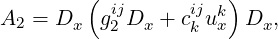 | (20.62) |
where the inverse g2ij of the leading term transforms as a covariant pseudo-Riemannian metric. From now on we drop the subscript 2 for the metric of A2. It was proved in [FPV14] that, if we set cijk = giqgjpckpq, then
|
cijk = 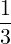 (gik,j − gij,k) |
and the metric fulfills the following identity:
|
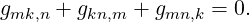 | (20.63) |
This means that the metric is a Monge metric [FPV14]. In particular, its coefficients are quadratic in the variables ui. It is easy to input the two operators in CDE. Let us start by A1: we may define its entries one by one as follows
We could also use one specialized Reduce package for the computation of the Christoffel symbols, like RedTen or GRG. Assuming that the operators gamma_hi(i,j,k) have been defined equal to Γkij and computed in the system using the inverse matrix gij of the leading coefficient contravariant metric24
|
gij = 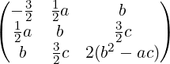 |
then, provided we defined a list dep_var of the dependent variables, we could set
and
The third order operator can be reconstructed as follows. Observe that the leading contravariant metric is
|
gij = 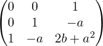 |
Introduce the above matrix in REDUCE as gu3. Then set
and define cijk as
Then define ckij
Introduce the contracted operator
Finally, define the operator A2
Now, we can test the Hamiltonian property of A1, A2 and their compatibility:
Needless to say, the result of the last three command is a list of zeroes.
We observe that the same software can be used to prove the bi-Hamiltonianity of a 6-component WDVV system [PV15].
Schouten bracket of multidimensional operators. The formulae (20.55), (20.56) hold also in the case of multidimensional operators, ie operators with total derivatives in more than one independent variables. Here we give one Hamiltonian operator H and we give two more variational bivectors P1, P2; all operators are of Dubrovin–Novikov type (homogeneous). We check the compatibility by computing [H,P1] and [H,P2]. Such computations are standard for the problem of computing the Hamiltonian cohomology of H.
This example has been provided by M. Casati. The file of the computation is dn2d_sb1.red. The dependent variables are p1, p2.
Let us set
|
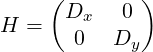 | (20.64) |
|
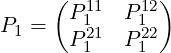 | (20.65) |
where
| P111 = | 2 ∂g_ ∂p1 py2D x + ∂g _ ∂p1 pxy2 + ∂g ___ ∂p1∂p2 px2p y2 + ∂g _ ∂2p1 px1p y2 | ||
| P121 = | − fD x2 + gD y2 + ∂g _ ∂p2 py2D y − ( ∂f_ ∂p1 px1 + 2 ∂f_ ∂p2 px2)D x | ||
| − ∂f _ ∂2p2 px2p x2 − ∂f ___ ∂p1∂p2 px1p x2 − ∂f _ ∂p2 p22x; | |||
| P112 = | fD
x2 − gD
y2 + ∂f _
∂p1 px1D
x − 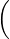 ∂g _ ∂p2 py2 + 2 ∂g_ ∂p1 py1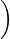 Dy | ||
| − ∂g _ ∂2p1 py1p y1 − ∂g ___ ∂p1∂p2 py1p y2 − ∂g _ ∂p1 p2y1; | |||
| P122 = | 2 ∂f_ ∂p2 px1D y + ∂f _ ∂p2 px1y + ∂f ___ ∂p1∂p2 px1p y1 + ∂f _ ∂2p2 px1p y2; |
and let P2 = P1T . This is implemented as follows:
Let us check the skew-adjointness of the above bivectors:
Of course the last three commands produce two zeros each.
Let us compute Schouten brackets.
sb11(1) is trivially a list of zeros, while sb12(1) is nonzero and sb13(1) is again zero.
More formulae are currently being implemented in the system, like symplecticity and Nijenhuis condition for recursion operators [KKV06]. Interested readers are warmly invited to contact R. Vitolo for questions/feature requests.
In this section we will show an experimental way to find nonlocal operators. The word ‘experimental’ comes from the lack of a comprehensive mathematical theory of nonlocal operators; in particular, it is still missing a theoretical framework for Schouten brackets of nonlocal opeartors in the odd variable language.
In any case we will achieve the results by means of a covering of the cotangent covering. Indeed, it can be proved that there is a 1 − 1 correspondence between (higher) symmetries of the initial equation and conservation laws on the cotangent covering. Such conservation laws provide new potential variables, hence a covering (see [BCD+99] for theoretical details on coverings).
In Section 20.10.15 we will also discuss a procedure for finding conservation laws from their generating functions that is of independent interest.
Non-local Hamiltonian operators for the Korteweg–de Vries equation. Here we will compute some nonlocal Hamiltonian operators for the KdV equation. The result of the computation (without the details below) has been published in [KKV04].
We have to solve equations of the type ddx(ct)-ddt(cx) as in 20.10.10. The main difference is that we will attempt a solution on the ℓ∗-covering (see Subsection 20.10.11). For this reason, first of all we have to determine covering variables with the usual mechanism of introducing them through conservation laws, this time on the ℓ∗-covering.
As a first step, let us compute conservation laws on the ℓ∗-covering whose components are linear in the p’s. This computation can be found in the file kdv_nlcl1 and related results and debug files.
The conservation laws that we are looking for are in 1 − 1 correspondence with symmetries of the initial equation [KKV04]. We will look for conservatoin laws which correspond to Galilean boost, x-translation, t-translation at the same time. In the case of 2 independent variables and 1 dependent variable, one could prove that one component of such conservation laws can always be written as sym*p as follows:
The second component must be found by solving an equation. To this aim we produce the ansatz
where we already introduced the sets linodd6 and linodd8 of 6-th and 8-th degree monomials which are linear in odd variables (see the source code). For the first conservation law solutions of the equation
are found by hand due to the presence of ‘t’ in the symmetry:
We also have the equations
They are solved in the usual way (see the source code of the example and the results file kdv_nlcl1_res).
Now, we solve the equation for shadows of nonlocal symmetries in a covering of the ℓ∗-covering (source file kdv_nlho1). We can produce such a covering by introducing three new nonlocal (potential) variables ra,rb,rc. We are going to look for non-local Hamiltonian operators depending linearly on one of these variables. To this aim we modify the odd part of the equation to include the components of the above conservation laws as the derivatives of the new non-local variables r1, r2, r3:
The scale degree analysis of the local Hamiltonian operators of the KdV equation leads to the formulation of the ansatz
where linext is the list of graded mononials which are linear in odd variables and have degree 7 (see the source file). The equation for shadows of nonlocal symmetries in ℓ∗-covering
is solved in the usual way, obtaining (in odd variables notation):
Higher non-local Hamiltonian operators could also be found [KKV04]. The CRACK approach also holds for non-local computations.
Following the ideas in [KKV04], a differential operator that sends symmetries into symmetries can be found as a shadow of symmetry on the ℓ-covering of the KdV equation, with the further condition that the shadows must be linear in the covering q-variables. The tangent covering of the KdV equation is
|
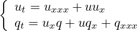 |
and we have to solve the equation KdV (phi) = 0, where KdV means that the linearization of the KdV equation is lifted over the tangent covering.
The file containing this example is kdv_ro1.red. The example closely follows the computational scheme presented in [KVV12].
Usually, recursion operators are non-local: operators of the form Dx−1 appear in their expression. Geometrically we interpret this kind of operator as follows. We introduce a conservation law on the cotangent covering of the form
| ω = rtdx + rxdt |
where rt = uq + qxx and rx = q. It has the remarkable feature of being linear with respect to q-variables. A non-local variable r can be introduced as a potential of ω, as rx = rx, rt = rt. A computation of shadows of symmetries on the system of PDEs
|
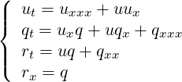 |
yields, analogously to the previous computations,
The operator q stands for the identity operator, which is (and must be!) always a solution; the other solution corresponds to the Lenard–Magri operator
| 3Dxx + 2u + uxDx−1. |
The Plebanski (or second Heavenly) equation
|
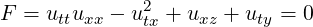 | (20.66) |
is Lagrangian. This means that its linearization is self-adjoint: ℓF = ℓF ∗, so that the tangent and cotangent covering coincide, its odd equation being
|
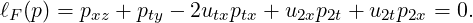 | (20.67) |
It is not difficult to realize that the above equation can be written in explicit conservative form as
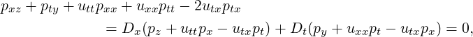 |
|
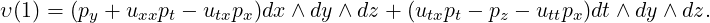 | (20.68) |
We can introduce a potential r for the above 2-component conservation law. Namely, we can assume that
|
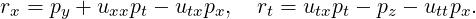 | (20.69) |
This is a new nonlocal variable for the (co)tangent covering of the Plebanski equation. We can load the Plebanski equation together with its nonlocal variable r as follows:
We can easily verify that the integrability condition for the new nonlocal variable holds:
the result is 0.
Now, we look for nonlocal recursion operators in the tangent covering using the new nonlocal odd variable r. We can load the equation exactly as before. We look for recursion operators which depend on r (which has scale degree 4); we produce the following ansatz for phi:
then we solve the equation of shadows of symmetries:
The solution is
hence we obtain the identity operator p and the new nonlocal operator r. It can be proved that changing coordinates to the evolutionary presentation yields the local operator (which has a much more complex expression than the identity operator) and one of the nonlocal operators of [NNS05]. More details on this computation can be found in [KVV12].
| Up | Next | Prev | PrevTail | Front |